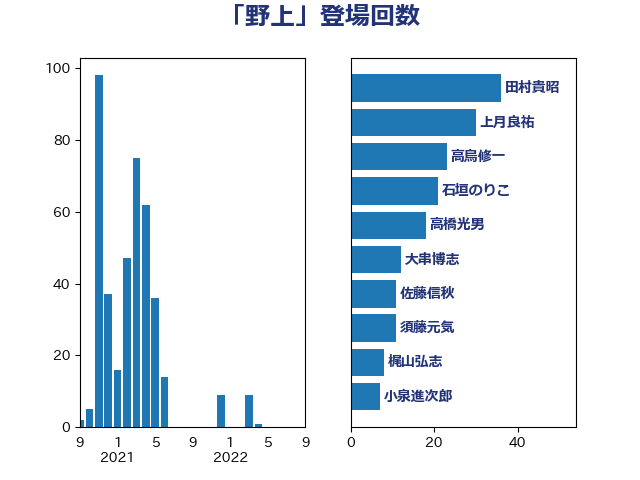

単語「野上」

| 田村貴昭 | 日本共産党 | 36 回 |
| 上月良祐 | 自由民主党 | 30 回 |
| 高鳥修一 | 自由民主党 | 23 回 |
| 石垣のりこ | 立憲民主党 | 21 回 |
| 高橋光男 | 公明党 | 18 回 |
| 大串博志 | 立憲民主党 | 12 回 |
| 佐藤信秋 | 自由民主党 | 11 回 |
| 須藤元気 | 無所属 | 11 回 |
| 梶山弘志 | 自由民主党 | 8 回 |
| 小泉進次郎 | 自由民主党 | 7 回 |
| 舞立昇治 | 自由民主党 | 7 回 |
| 金田勝年 | 自由民主党 | 7 回 |
| 茂木敏充 | 自由民主党 | 6 回 |
| 串田誠一 | 日本維新の会 | 5 回 |
| 宮崎雅夫 | 自由民主党 | 5 回 |
| 小沼巧 | 立憲民主党 | 5 回 |
| 東徹 | 日本維新の会 | 5 回 |
| 河野義博 | 公明党 | 5 回 |
| 玉木雄一郎 | 国民民主党 | 5 回 |
| 紙智子 | 日本共産党 | 5 回 |
| 舟山康江 | 国民民主党 | 5 回 |
| 金子恵美 | 立憲民主党 | 5 回 |
| 後藤祐一 | 立憲民主党 | 4 回 |
| 近藤和也 | 立憲民主党 | 4 回 |
| 進藤金日子 | 自由民主党 | 4 回 |
| 鈴木憲和 | 自由民主党 | 4 回 |
| 高野光二郎 | 自由民主党 | 4 回 |
| 齋藤健 | 自由民主党 | 4 回 |
| 上杉謙太郎 | 自由民主党 | 3 回 |
| 堂故茂 | 自由民主党 | 3 回 |
| 山東昭子 | 自由民主党 | 3 回 |
| 山田俊男 | 自由民主党 | 3 回 |
| 田名部匡代 | 立憲民主党 | 3 回 |
| 石井苗子 | 日本維新の会 | 3 回 |
| 細田健一 | 自由民主党 | 3 回 |
| 葉梨康弘 | 自由民主党 | 3 回 |
| 重徳和彦 | 立憲民主党 | 3 回 |
| 野村哲郎 | 自由民主党 | 3 回 |
| 吉田宣弘 | 公明党 | 2 回 |
| 室井邦彦 | 日本維新の会 | 2 回 |
| 宮内秀樹 | 自由民主党 | 2 回 |
| 小寺裕雄 | 自由民主党 | 2 回 |
| 岩田和親 | 自由民主党 | 2 回 |
| 浅田均 | 日本維新の会 | 2 回 |
| 渡辺孝一 | 自由民主党 | 2 回 |
| 熊野正士 | 公明党 | 2 回 |
| 稲津久 | 公明党 | 2 回 |
| 緑川貴士 | 立憲民主党 | 2 回 |
| 藤木眞也 | 自由民主党 | 2 回 |
| 赤羽一嘉 | 公明党 | 2 回 |
| 酒井庸行 | 自由民主党 | 2 回 |
| 冨樫博之 | 自由民主党 | 1 回 |
| 古賀友一郎 | 自由民主党 | 1 回 |
| 坂本哲志 | 自由民主党 | 1 回 |
| 大西健介 | 立憲民主党 | 1 回 |
| 宮下一郎 | 自由民主党 | 1 回 |
| 小西洋之 | 立憲民主党 | 1 回 |
| 岸田文雄 | 自由民主党 | 1 回 |
| 斎藤洋明 | 自由民主党 | 1 回 |
| 浜口誠 | 国民民主党 | 1 回 |
| 渡辺猛之 | 自由民主党 | 1 回 |
| 玄葉光一郎 | 立憲民主党 | 1 回 |
| 磯崎仁彦 | 自由民主党 | 1 回 |
| 礒崎哲史 | 国民民主党 | 1 回 |
| 神津たけし | 立憲民主党 | 1 回 |
| 神谷裕 | 立憲民主党 | 1 回 |
| 福田達夫 | 自由民主党 | 1 回 |
| 竹内譲 | 公明党 | 1 回 |
| 萩生田光一 | 自由民主党 | 1 回 |
| 谷合正明 | 公明党 | 1 回 |
| 谷田川元 | 立憲民主党 | 1 回 |
| 豊田俊郎 | 自由民主党 | 1 回 |
| 逢坂誠二 | 立憲民主党 | 1 回 |
| 野上浩太郎 | 自由民主党 | 1 回 |
| 高橋克法 | 自由民主党 | 1 回 |
| 高階恵美子 | 自由民主党 | 1 回 |